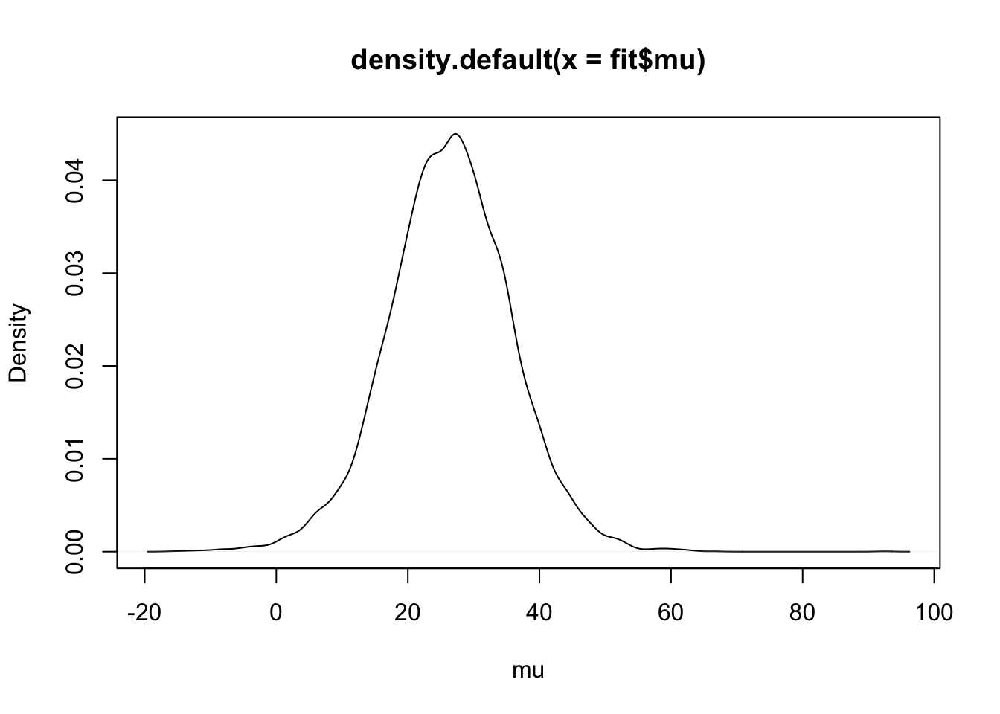
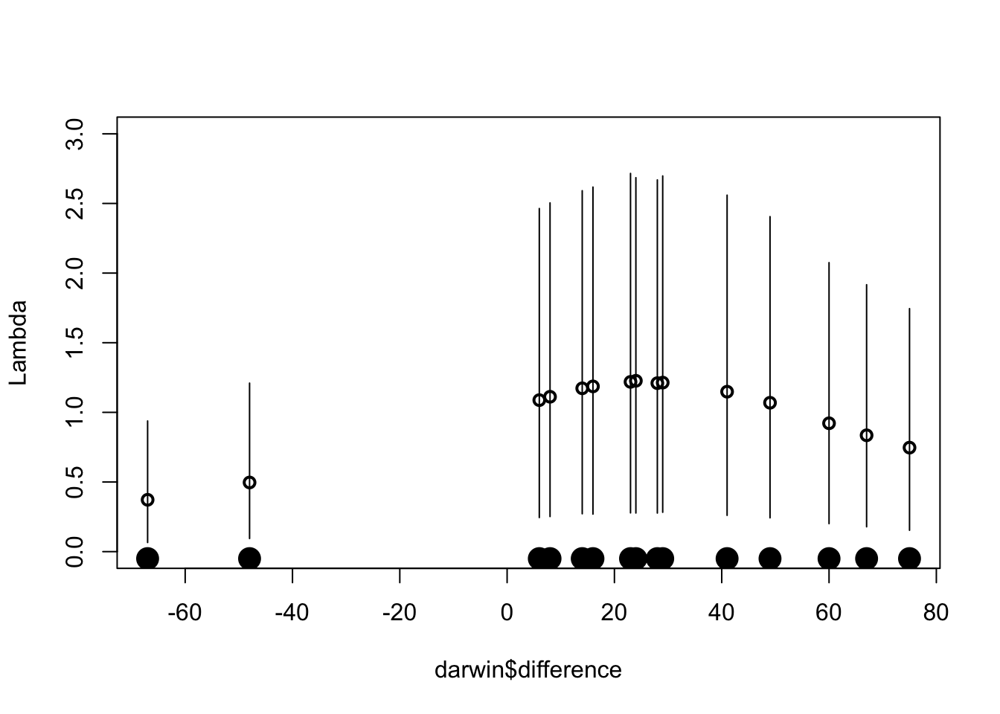
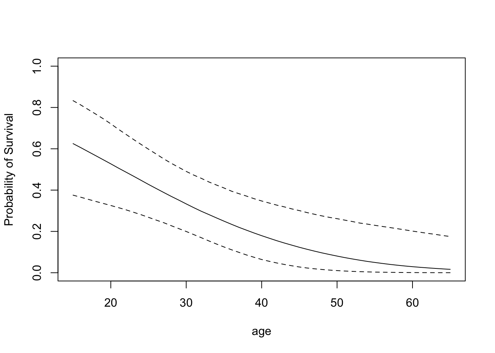
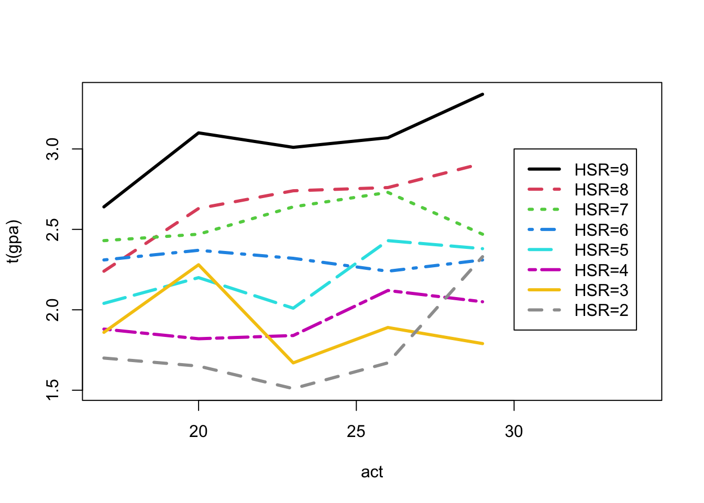
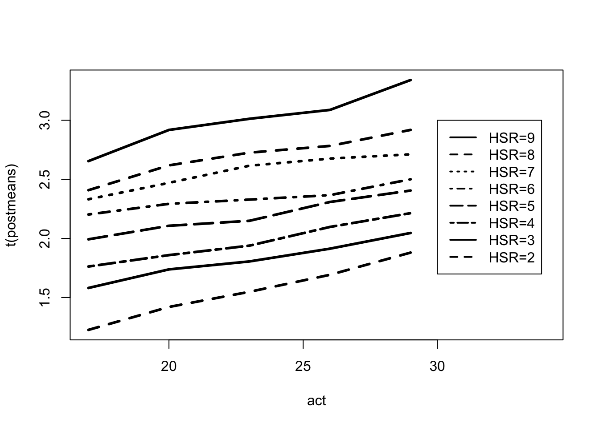
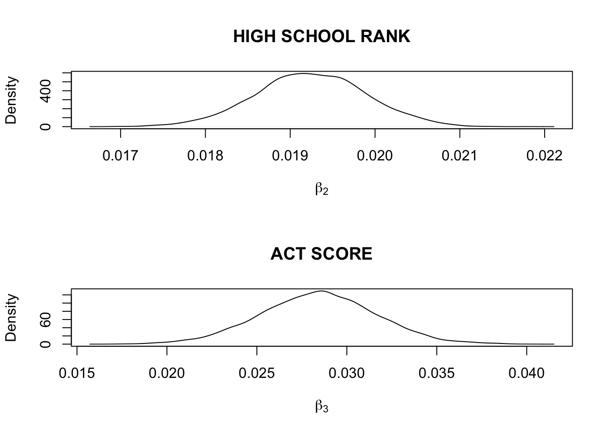
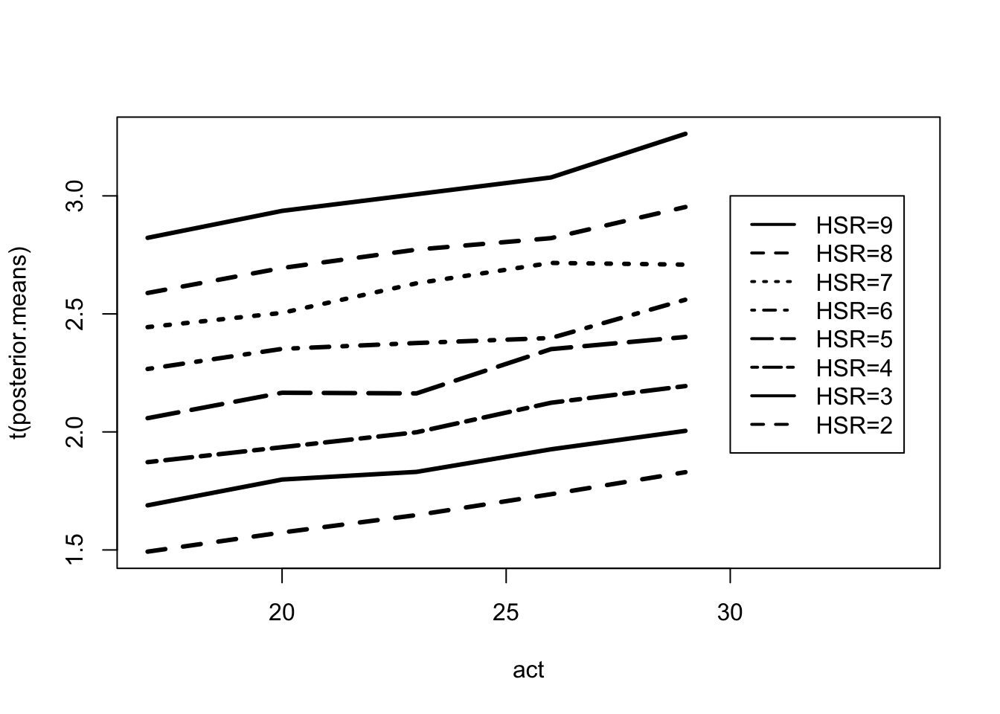

Chapter 10 Gibbs Sampling
10.1 Robust Modeling
Illustrating Gibbs sampling using a t sampling model.
library(LearnBayes)fit <- robustt(darwin$difference, 4, 10000)plot(density(fit$mu), xlab="mu")
The \(\lambda_j\) parameters indicate the outlying observations.
mean.lambda <- apply(fit$lam, 2, mean)
lam5 <- apply(fit$lam, 2, quantile, .05)
lam95 <- apply(fit$lam, 2, quantile, .95)plot(darwin$difference, mean.lambda,
lwd=2, ylim=c(0,3), ylab="Lambda")
for (i in 1:length(darwin$difference)){
lines(c(1, 1) * darwin$difference[i],
c(lam5[i], lam95[i]))
}
points(darwin$difference,
0 * darwin$difference-.05,
pch=19, cex=2)
10.2 Binary Response Regression with a Probit Link
Missing data and Gibbs sampling
X <- with(donner,
cbind(1, age, male))Traditional probit fit:
fit <- glm(survival ~ X - 1,
family=binomial(link=probit),
data = donner)
summary(fit)##
## Call:
## glm(formula = survival ~ X - 1, family = binomial(link = probit),
## data = donner)
##
## Deviance Residuals:
## Min 1Q Median 3Q Max
## -1.7420 -1.0555 -0.2756 0.8861 2.0339
##
## Coefficients:
## Estimate Std. Error z value Pr(>|z|)
## X 1.91730 0.76438 2.508 0.0121 *
## Xage -0.04571 0.02076 -2.202 0.0277 *
## Xmale -0.95828 0.43983 -2.179 0.0293 *
## ---
## Signif. codes: 0 '***' 0.001 '**' 0.01 '*' 0.05 '.' 0.1 ' ' 1
##
## (Dispersion parameter for binomial family taken to be 1)
##
## Null deviance: 62.383 on 45 degrees of freedom
## Residual deviance: 51.283 on 42 degrees of freedom
## AIC: 57.283
##
## Number of Fisher Scoring iterations: 5Bayesian fit of the probit model using data augmentation.
m <- 10000
fit <- bayes.probit(donner$survival, X, m)apply(fit$beta,2,mean)## [1] 2.06883244 -0.05003696 -1.00001104apply(fit$beta,2,sd)## [1] 0.80049309 0.02133692 0.46412859Posterior distributions of specific probabilities.
a <- seq(15, 65)
X1 <- cbind(1, a, 1)
p.male <- bprobit.probs(X1, fit$beta)plot(a, apply(p.male, 2, quantile, .5),
type="l", ylim=c(0,1),
xlab="age", ylab="Probability of Survival")
lines(a,apply(p.male, 2, quantile, .05), lty=2)
lines(a,apply(p.male, 2, quantile, .95), lty=2)
Proper priors and model selection of probit models.
y <- donner$survival
X <- cbind(1, donner$age, donner$male)beta0 <- c(0,0,0)
c0 <- 100
P0 <- t(X) %*% X / c0bayes.probit(y, X, 1000,
list(beta=beta0, P=P0))$log.marg## [1] -31.529bayes.probit(y, X[, -2], 1000,
list(beta=beta0[-2], P=P0[-2, -2]))$log.marg## [1] -32.75655bayes.probit(y, X[, -3], 1000,
list(beta=beta0[-3], P=P0[-3, -3]))$log.marg## [1] -31.99984bayes.probit(y, X[, -c(2, 3)], 1000,
list(beta=beta0[- c(2, 3)],
P=P0[-c(2, 3), -c(2, 3)]))$log.marg## [1] -32.9830110.3 Estimating a Table of Means
rlabels <- c("91-99", "81-90", "71-80",
"61-70", "51-60", "41-50",
"31-40", "21-30")
clabels <- c("16-18", "19-21", "22-24",
"25-27", "28-30")
gpa <- matrix(iowagpa[, 1],
nrow = 8, ncol = 5, byrow = T)
dimnames(gpa) <- list(HSR = rlabels,
ACTC = clabels)
gpa## ACTC
## HSR 16-18 19-21 22-24 25-27 28-30
## 91-99 2.64 3.10 3.01 3.07 3.34
## 81-90 2.24 2.63 2.74 2.76 2.91
## 71-80 2.43 2.47 2.64 2.73 2.47
## 61-70 2.31 2.37 2.32 2.24 2.31
## 51-60 2.04 2.20 2.01 2.43 2.38
## 41-50 1.88 1.82 1.84 2.12 2.05
## 31-40 1.86 2.28 1.67 1.89 1.79
## 21-30 1.70 1.65 1.51 1.67 2.33samplesizes <- matrix(iowagpa[, 2],
nrow = 8, ncol = 5, byrow = T)
dimnames(samplesizes) <- list(HSR = rlabels,
ACTC = clabels)
samplesizes## ACTC
## HSR 16-18 19-21 22-24 25-27 28-30
## 91-99 8 15 78 182 166
## 81-90 20 71 168 178 91
## 71-80 40 116 180 133 46
## 61-70 34 93 124 101 19
## 51-60 41 73 62 58 9
## 41-50 19 25 36 49 16
## 31-40 8 9 15 29 9
## 21-30 4 5 9 11 1act <- seq(17, 29, by = 3)
matplot(act, t(gpa), type = "l", lwd = 3,
xlim = c(17, 34), col=1:8, lty=1:8)
legend(30, 3, lty = 1:8, lwd = 3,
legend = c("HSR=9", "HSR=8",
"HSR=7", "HSR=6", "HSR=5", "HSR=4",
"HSR=3", "HSR=2"), col=1:8)
Fitting a Bayesian model with a flat prior over the restricted space.
MU <- ordergibbs(iowagpa, 5000)postmeans <- apply(MU, 2, mean)
postmeans <- matrix(postmeans, nrow = 8, ncol = 5)
postmeans <- postmeans[seq(8, 1, -1), ]
dimnames(postmeans) <-
list(HSR=rlabels, ACTC=clabels)
round(postmeans, 2)## ACTC
## HSR 16-18 19-21 22-24 25-27 28-30
## 91-99 2.65 2.92 3.01 3.09 3.34
## 81-90 2.41 2.62 2.73 2.78 2.92
## 71-80 2.33 2.47 2.62 2.68 2.71
## 61-70 2.20 2.29 2.33 2.37 2.50
## 51-60 1.99 2.11 2.15 2.31 2.41
## 41-50 1.76 1.86 1.94 2.10 2.21
## 31-40 1.58 1.74 1.81 1.91 2.05
## 21-30 1.23 1.42 1.55 1.69 1.88matplot(act, t(postmeans), type = "l",
lty=1:8, lwd = 3, col = 1,
xlim = c(17, 34))
legend(30, 3, lty = 1:8, lwd = 2,
legend = c("HSR=9", "HSR=8",
"HSR=7", "HSR=6", "HSR=5", "HSR=4",
"HSR=3", "HSR=2"))
postsds <- apply(MU, 2, sd)
postsds <- matrix(postsds, nrow = 8, ncol = 5)
postsds <- postsds[seq(8, 1, -1), ]
dimnames(postsds) <- list(HSR=rlabels,
ACTC=clabels)
round(postsds, 3)## ACTC
## HSR 16-18 19-21 22-24 25-27 28-30
## 91-99 0.141 0.084 0.054 0.043 0.050
## 81-90 0.077 0.058 0.038 0.038 0.062
## 71-80 0.065 0.053 0.038 0.039 0.048
## 61-70 0.065 0.039 0.036 0.039 0.081
## 51-60 0.074 0.052 0.053 0.049 0.073
## 41-50 0.082 0.068 0.067 0.070 0.087
## 31-40 0.115 0.077 0.070 0.074 0.096
## 21-30 0.177 0.136 0.118 0.113 0.131s <- .65
se <- s / sqrt(samplesizes)
round(postsds / se, 2)## ACTC
## HSR 16-18 19-21 22-24 25-27 28-30
## 91-99 0.61 0.50 0.74 0.90 1.00
## 81-90 0.53 0.75 0.75 0.79 0.91
## 71-80 0.63 0.88 0.79 0.69 0.50
## 61-70 0.58 0.58 0.62 0.61 0.54
## 51-60 0.73 0.68 0.65 0.58 0.34
## 41-50 0.55 0.52 0.62 0.76 0.53
## 31-40 0.50 0.36 0.42 0.61 0.44
## 21-30 0.55 0.47 0.54 0.58 0.20Fit of a hierarchical regression prior:
FIT <- hiergibbs(iowagpa, 5000)par(mfrow=c(2,1))
plot(density(FIT$beta[, 2]),
xlab=expression(beta[2]),
main="HIGH SCHOOL RANK")
plot(density(FIT$beta[, 3]),
xlab=expression(beta[3]),
main="ACT SCORE")
quantile(FIT$beta[, 2],
c(.025, .25, .5, .75, .975))## 2.5% 25% 50% 75% 97.5%
## 0.01793738 0.01881165 0.01924078 0.01968339 0.02051583quantile(FIT$beta[, 3],
c(.025, .25, .5, .75, .975))## 2.5% 25% 50% 75% 97.5%
## 0.02209046 0.02627562 0.02845516 0.03053914 0.03466108quantile(FIT$var,
c(.025, .25, .5, .75, .975))## 2.5% 25% 50% 75% 97.5%
## 0.001104009 0.002020655 0.002924627 0.004204618 0.007893763posterior.means <- apply(FIT$mu, 2, mean)
posterior.means <- matrix(posterior.means,
nrow = 8, ncol = 5,
byrow = T)par(mfrow=c(1, 1))
matplot(act, t(posterior.means),
type = "l", lwd = 3, lty=1:8, col=1,
xlim = c(17, 34))
legend(30, 3, lty = 1:8, lwd = 2,
legend = c("HSR=9", "HSR=8", "HSR=7",
"HSR=6", "HSR=5", "HSR=4",
"HSR=3", "HSR=2"))
p <- 1 - pnorm((2.5 - FIT$mu) / .65)
prob.success <- apply(p, 2, mean)prob.success <- matrix(prob.success,
nrow=8, ncol=5, byrow=T)
dimnames(prob.success) <- list(HSR=rlabels,
ACTC=clabels)
round(prob.success,3)## ACTC
## HSR 16-18 19-21 22-24 25-27 28-30
## 91-99 0.689 0.748 0.782 0.813 0.879
## 81-90 0.554 0.617 0.662 0.689 0.757
## 71-80 0.466 0.503 0.579 0.630 0.625
## 61-70 0.360 0.410 0.425 0.438 0.537
## 51-60 0.249 0.304 0.303 0.409 0.441
## 41-50 0.168 0.193 0.221 0.282 0.320
## 31-40 0.107 0.141 0.153 0.190 0.224
## 21-30 0.062 0.078 0.096 0.121 0.153